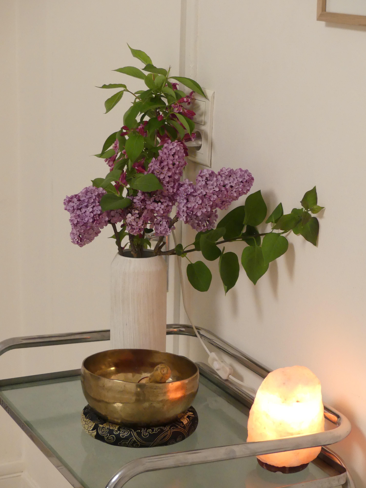
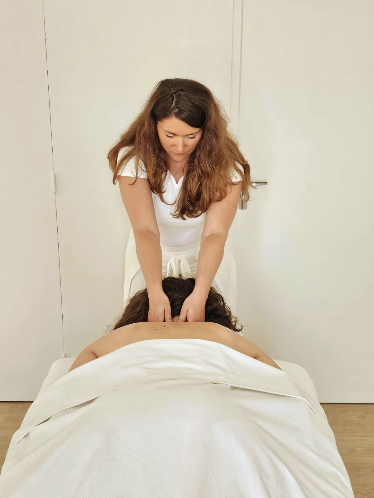
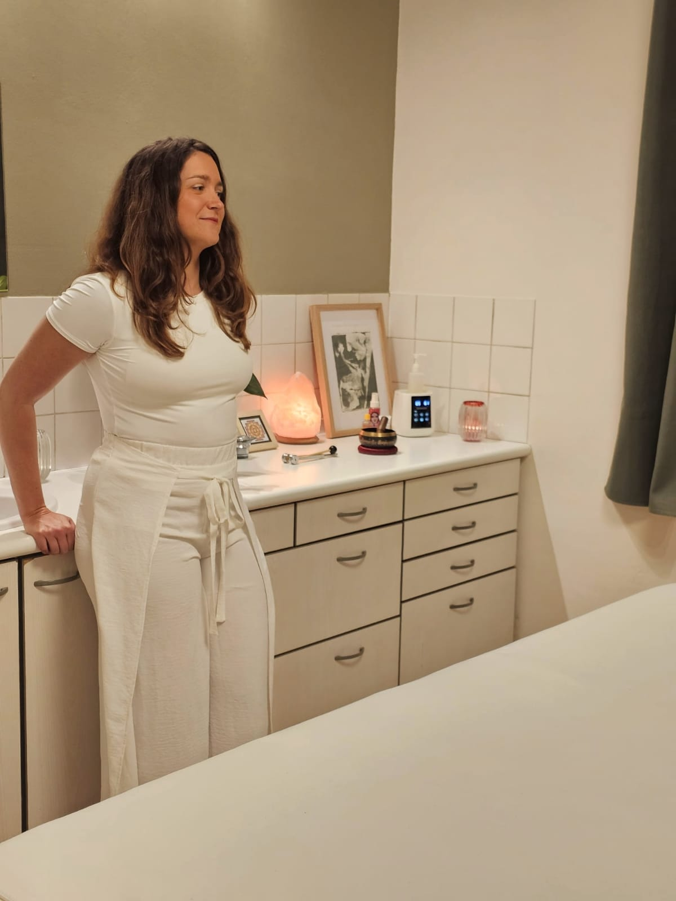

"Ici, le corps est écouté."
Un espace pour
revenir à soi,
à travers le corps.
Un temps pour ralentir, relâcher les tensions, et retrouver une présence simple et vivante.
PRENDRE RENDEZ-VOUS
Un lieu pour se poser, simplement
Pour laisser le corps se détendre, sans attente. Ici, on ralentit. On revient aux sensations simples.
Les séances se déroulent dans un espace calme et confidentiel. Le respect, l'écoute et la sécurité sont au cœur de chaque accompagnement.

Un massage construit dans l'instant.
Plus qu'un enchaînement de gestes, le soin se vit comme une expérience progressive où le corps peut relâcher à son rythme.
Le toucher est lent, enveloppant, parfois plus appuyé. Il suit le corps plutôt qu'il ne le dirige.
- Relâcher les tensions physiques
- Se détendre en profondeur
- Apaiser le mental
- Retrouver une sensation de sécurité intérieure
- Revenir à des sensations simples
Une expérience fluide
Le soin se reçoit à l'huile chaude, jusqu'au cuir chevelu. Des dimensions sonores et olfactives accompagnent le soin.
"Le corps sait des choses que nous ne savons pas encore." — E. Gendlin

Pour celles et ceux qui ressentent le besoin de ralentir.
Pour sortir du mental et revenir à quelque chose de plus simple, plus vivant. Que l'on soit habitué au massage ou que ce soit une première fois, le soin s’ajuste à chacun.


Praticienne de massage, yoga et méditation,
engagée dans une présence sensible et nourrie
par un parcours entre France et Inde.
Un parcours entre
France et Inde.
Gersoise d’origine, mon parcours m’a menée du monde du luxe, sur la côte d’Azur, aux ashrams en Inde, où j’ai vécu plus d’un an, avant de revenir à quelque chose de plus simple.
Je me rends aujourd’hui régulièrement en Inde, un pays qui nourrit profondément mon rapport au corps, à la présence et au soin.
J’ai évolué dans des lieux d’exception, entre spas et hôtellerie haut de gamme, au contact direct des personnes, dans des espaces où l’attention, la qualité de présence et le sens du détail sont essentiels.
Ce parcours a façonné ma sensibilité, notamment à travers l’ayurvéda.
Aujourd’hui, le travail passe par le corps.
J’accompagne à travers le massage, le yoga et la méditation, dans une approche à la fois sensible et ancrée, nourrie par ce parcours et par une formation continue en approches humanistes du corps et de la présence.
Le soin
Soin signature Only Inside
Immersion
95€
1h30 — incluant l'accueil et le retour au calme
Un temps complet pour laisser le corps s'ouvrir progressivement, relâcher en profondeur et entrer pleinement dans l'expérience du soin.
Pour une première séance, un temps d'échange permet d'ajuster le soin au plus juste. Il est recommandé d'arriver quelques minutes en avance.
Réserver ce soin
En parallèle des soins, je propose des temps autour du corps et de la présence : Hatha Yoga, Yoga Nidra (relaxation profonde) et méditation.
Questions fréquentes
Faut-il prévoir quelque chose après la séance ?
Un temps calme est idéal après le soin pour laisser le corps intégrer. Il est également conseillé de boire de l’eau.
Comment s'habiller ?
Venez simplement dans une tenue confortable. Prévoyez des vêtements qui ne craignent pas l’huile. Les bijoux sont retirés avant la séance.
Est-ce que le soin est adapté à tous ?
Le soin s’adapte à chaque personne, dans le respect du corps et de ses besoins. Il peut être reçu à tout âge, avec une approche toujours ajustée.